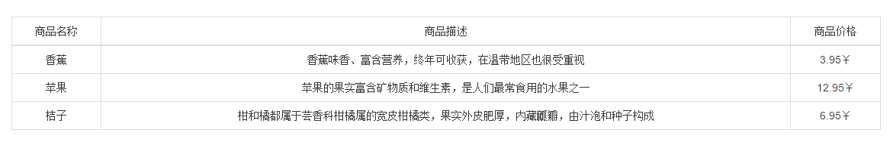

angularJS从后台获取数据的方式
1. JSON数据格式：
[
{"id":0,"title":"香蕉","description":"香蕉味香、富含营养，终年可收获，在温带地区也很受重视","price":"3.95￥"},
{ "id": 1,"title": "苹果","description": "苹果的果实富含矿物质和维生素，是人们最常食用的水果之一","price": "12.95￥"},
{"id": 2,"title": "桔子","description": "柑和橘都属于芸香科柑橘属的宽皮柑橘类，果实外皮肥厚，内藏瓤瓣，由汁泡和种子构成","price": "6.95￥"}
]
2. APP.HTML:
<!doctype html>
<html lang="en" ng-app="shop">
<head>
<meta charset="UTF-8">
<title>angularJS同后台数据库的交互</title>
<!--js文件-->
<script src="js/jquery.js"></script>
<script src="js/angular.js"></script>
<!--css文件-->
<link rel="stylesheet" href="css/bootstrap.min.css">
<link rel="stylesheet" href="css/bootstrap-theme.min.css">
</head>
<body ng-controller="main">
<div class="container" style="margin-top:50px;">
<table class="table table-bordered text-center table-hover">
<thead>
<tr>
<td>商品名称</td>
<td>商品描述</td>
<td>商品价格</td>
</tr>
</thead>
<tbody>
<tr ng-repeat="v in goods">
<td>{{v.title}}</td>
<td>{{v.description}}</td>
<td>{{v.price}}</td>
</tr>
</tbody>
</table>
</div>
</body>
<script src="app.js"></script>
</html>
3. APP.JS
var shop=angular.module("shop",[]);
shop.factory('goods',['$http','$q',function($http,$q){
var goods={
getGoods:function(){
//使用$q延后执行
var deferred=$q.defer();
//通过$http的方式获取数据（类似ajax请求）
$http.get('index.json')
.success(function(data){
console.log(data);
//解决延迟对象
deferred.resolve(data);
}).error(function(data){
//拒绝延迟对象
deferred.reject(data);
})
return deferred.promise;
}
}
return goods;
}])
shop.controller('main',['$scope','goods',function($scope,goods){
//请求涉及到异步(数据返回来之后无法及时堆到页面中)，
因此利用promise的编程思路(异步请求完成之后再执行相应的操作)来解决拿不到数据的问题
goods.getGoods().then(function(data){
$scope.goods=data;
console.log($scope.goods);
})
}])
